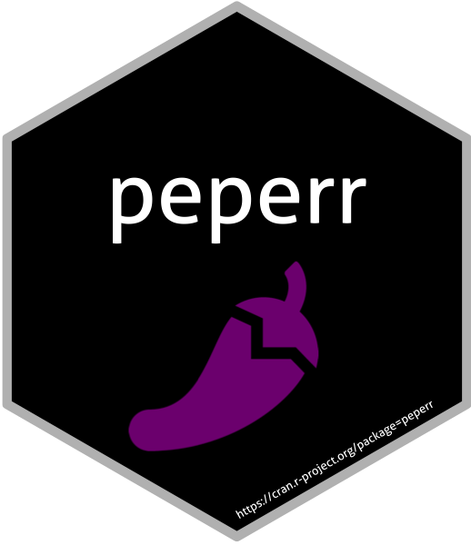

mboost Cox backend
mboost-backend.RdWrappers for Cox boosting models fitted with mboost.
Usage
fit.mboost.coxph(response, x, cplx, ...)
complexity.cvrisk.mboost(response, x, full.data, max.mstop = 100L, folds = NULL, ...)
# S3 method for class 'mboost_coxph'
predictProb(object, response, x, times, complexity = NULL, ...)
# S3 method for class 'mboost_coxph'
PLL(object, newdata, newtime, newstatus, complexity = NULL, ...)Arguments
- response
survival response as a
Survobject or a two-columntime/statusmatrix.- x
covariate matrix.
- cplx
selected stopping iteration
mstop.- full.data
full data frame, accepted for the
peperrcomplexity-function contract.- max.mstop
maximum number of boosting iterations considered during cross-validation.
- folds
optional mboost fold specification passed to
cvrisk.- object
a fitted
mboost_coxphobject.- times
evaluation times for survival probabilities.
- complexity
selected stopping iteration.
- newdata
new covariate matrix.
- newtime
vector of follow-up times.
- newstatus
vector of event indicators.
- ...
additional arguments passed to
glmboost,cvrisk, or prediction helpers.
Value
Fitted mboost_coxph objects, selected stopping iterations, survival-probability matrices, and numeric predictive partial log-likelihood values, respectively.